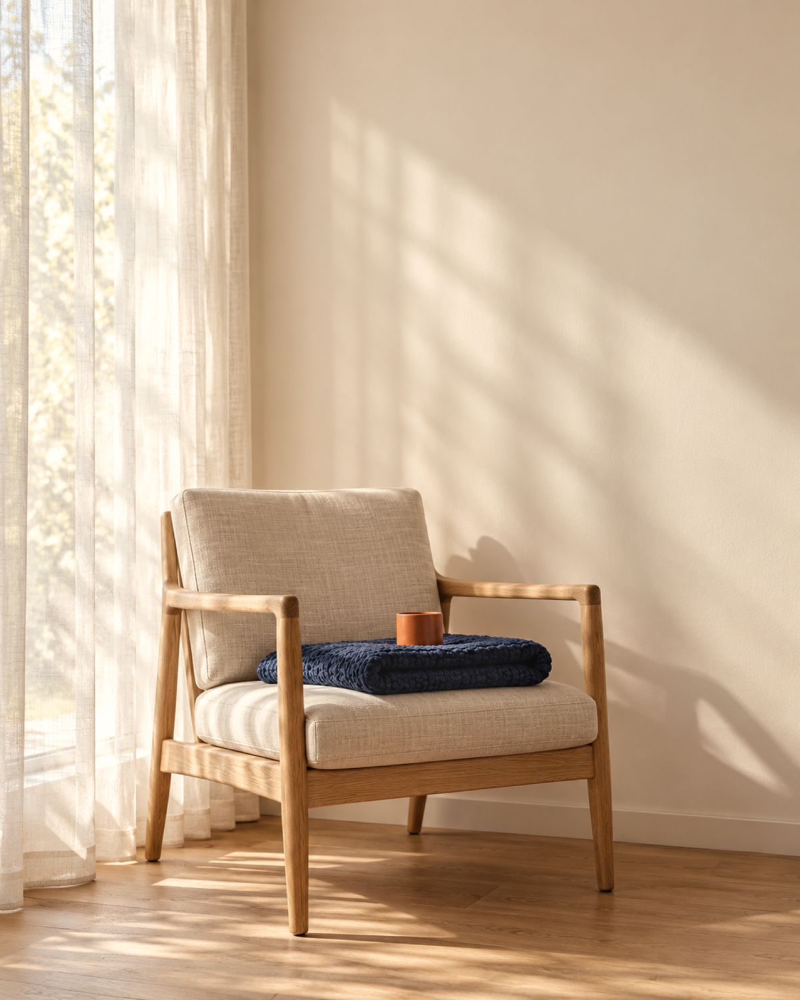
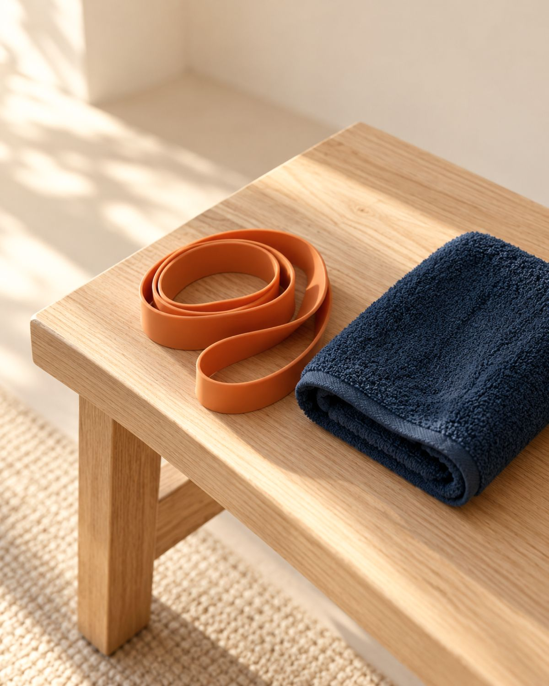
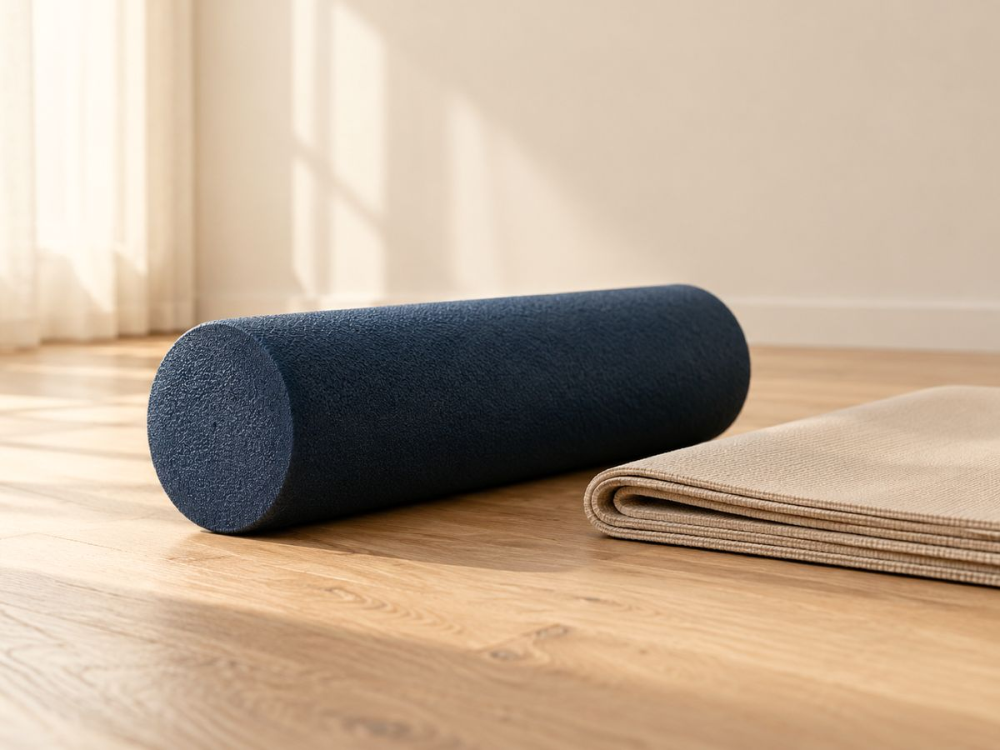
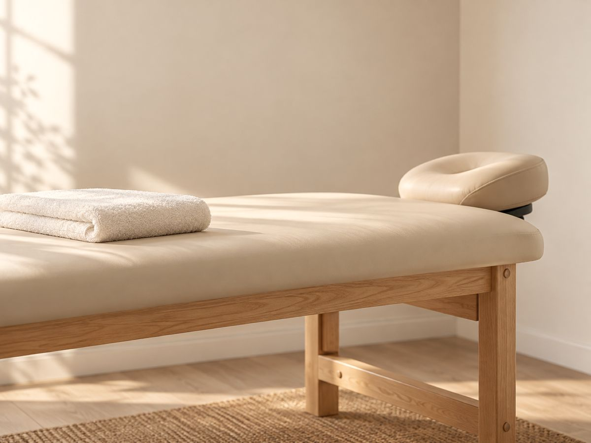
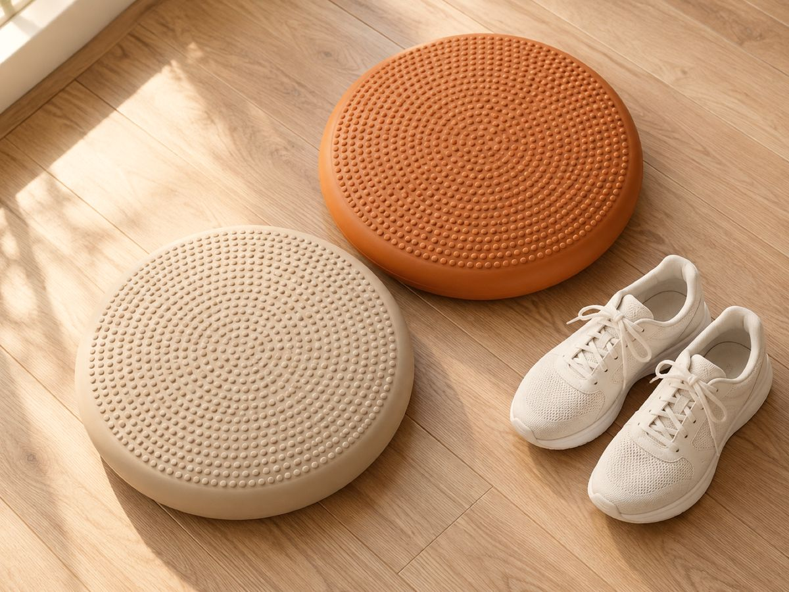

Fisioterapeuta · CREFITO-10/343204-F · Centro, Florianópolis
Entender as suas dores e desconfortos. Depois tratar.
Atuo com fisioterapia ortopédica e neurofuncional, em dores agudas e crônicas, com um atendimento totalmente individualizado.
Nathália Pereira Bentancur · CREFITO-10/343204-F
Situações · Como posso ajudar você?
Talvez a sua dor esteja nesta lista
- Uma dor nas costas ou no pescoço que vai e volta há meses.
- Uma dor que apareceu com a corrida ou com o treino e não passa.
- Um joelho, um ombro ou um tornozelo que já não aguenta o que aguentava.
- Uma condição neurológica que deixou o andar mais inseguro.
- Alguém da família que, com a idade, perdeu firmeza para as tarefas de casa.
- Uma inflamação ou uma ferida que demora a cicatrizar.
Dor nova e muito forte, ou acompanhada de febre, pede uma avaliação médica antes.
Ver como é a avaliaçãoEntender a dor · O corpo compensa
Dor que se repete muda o jeito de se mover
Quando uma dor dura semanas, o corpo começa a se proteger. Você evita um movimento, apoia mais de um lado, dorme numa posição só.
Com o tempo, essas mudanças pequenas também passam a doer.
Por isso, antes de qualquer técnica, vem a história da sua dor.

Como eu atendo · Etapas que se somam
Um atendimento totalmente individualizado
Cada plano é adaptado ao seu caso e à sua rotina.
Etapa 01
Avaliar
Começo pela conversa e pela avaliação do movimento, para achar de onde vem a dor e o que ela limita.
Etapa 02
Tratar
Escolho, entre diversas técnicas da fisioterapia, as indicadas para você.
Etapa 03
Ensinar
Educação em saúde: explico os procedimentos e o que você pode fazer em casa entre um atendimento e outro.

A primeira avaliação · Histórico e movimento
O que uma avaliação de fisioterapia olha
Se você já fez fisioterapia e a dor voltou, conte como foi. Isso também entra na avaliação.
- Quando a dor começou e como ela mudou desde então.
- Os movimentos que doem e os que você deixou de fazer.
- Força e mobilidade de cada lado do corpo.
- A sua rotina de trabalho e de treino.
- O que você quer voltar a fazer.
Para todos que desejam ter mais qualidade de vida e movimento.
Áreas em que atuo · Fisioterapia
Onde a fisioterapia entra no seu caso
Todas começam pela avaliação.
-

Fisioterapia ortopédica
Para dores agudas e crônicas em músculos e articulações, e para retomar movimentos depois de uma lesão.
Perguntar pelo WhatsApp -

-

Fisioterapia neurofuncional
Para quem convive com uma condição neurológica e quer trabalhar equilíbrio e marcha no dia a dia.
Perguntar pelo WhatsApp -
Reabilitação funcional em idosos
Exercícios para levantar da cadeira e caminhar pela casa, no ritmo de cada pessoa.
Perguntar pelo WhatsApp -
Dor · Movimento · Função
O que a gente trabalha junto
- 01
Saber o que fazer quando a dor aparece.
- 02
Fortalecer o que o corpo poupou para se proteger da dor.
- 03
Reestabelecer função para tarefas como subir escada ou carregar peso.
- 04
Voltar com confiança às atividades que deixou de lado, como a corrida.
Cada caso evolui de um jeito. O plano é revisto com você ao longo do tratamento.
Antes de agendar · Sala 201
Um consultório no Centro de Florianópolis.
Na mensagem, diga os dias e horários que ficam melhores para você. O ambiente é limpo e confortável.
R. Dom Jaime Câmara, 66, Sala 201
Ver no mapa
Centro, Florianópolis/SC
88015-120Segunda a sexta, das 9h às 18h
(48) 99849-4285, por mensagem ou ligação
Valor combinado no primeiro contato
5,0 no Google · 44 avaliações
Ver no Google
Dúvidas · Agendamento
Antes da primeira consulta
Preciso de pedido médico para agendar?
Para agendar, não. Se na avaliação eu notar algo que precisa de um médico primeiro, eu te digo.
Tenho dor há anos. Ainda vale a avaliação?
Vale. Saber há quanto tempo a dor existe ajuda a montar o plano, que parte de onde você está hoje.
O que levar no primeiro dia?
Exames ou laudos recentes, se tiver. E uma roupa que deixe você se mexer com conforto.
Contato · Mensagem ou ligação
Me conte o que está sentindo
Me chamo Nathália Pereira Bentancur, fisioterapeuta, CREFITO-10/343204-F. Escreva as suas dores e desconfortos do seu jeito; eu respondo e combinamos a primeira avaliação.
Este site é informativo e não substitui uma avaliação profissional. As descrições das áreas são gerais; o plano de cada pessoa sai da avaliação.